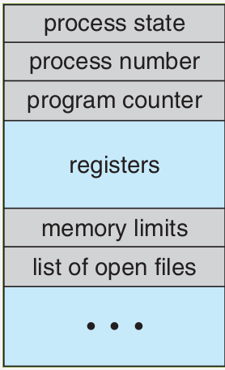
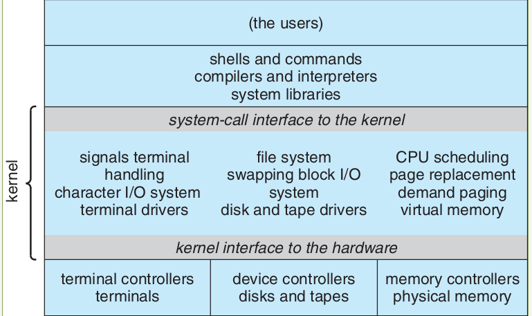
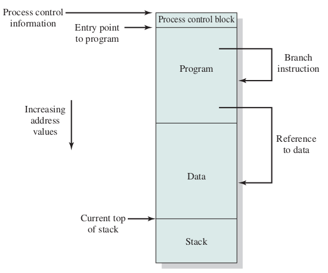
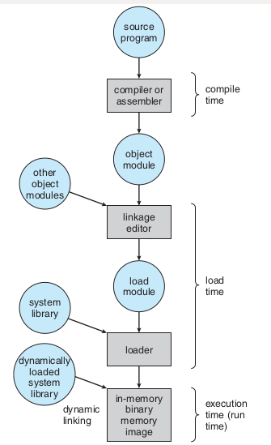
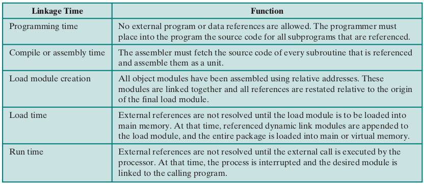
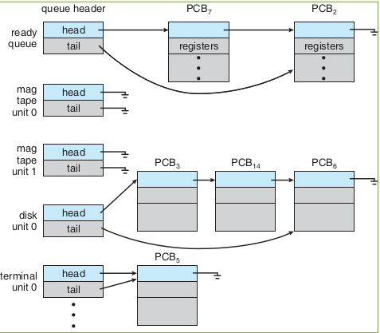
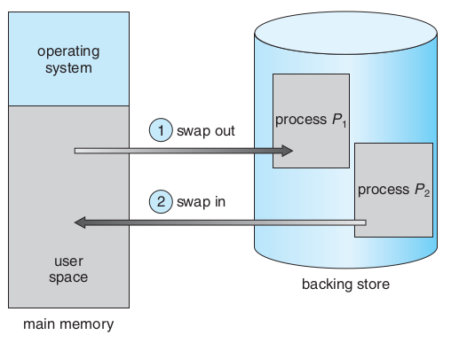
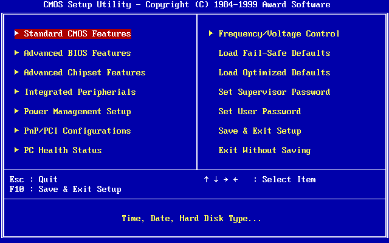
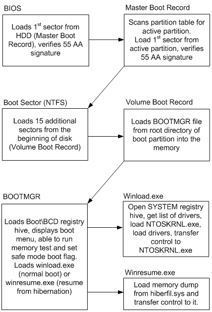

Fixed Partitioining or Static Partitioning

Equal-Size Partitions
Unequal-Size Partitions
- Pros:
Minimal Hardware Complexity
Simple OS Logic
Low Overhead
- Cons:
Internal Fragmentation
Fixed Process Limit
Maximum Size Limit

Equal-Size Partitions
Unequal-Size Partitions
Minimal Hardware Complexity
Simple OS Logic
Low Overhead
Internal Fragmentation
Fixed Process Limit
Maximum Size Limit

pros: fast
cons: clog
pros:
cons: Slow, Small holes
pros: large leftover
cons: slow, use largest
pros: Prevents clogging
cons:
pros: instant allocation
cons: overhead of OS
Place: Cards in card reader, file in disk, flash, etc.
passive
Place: Main Memory (RAM)
Active
Process Status

Process Control Block (PCB)








address binding, loader

address binding, linker






The Principle of Locality
Programs do not access memory completely at random
They cluster around specific addresses.
loop variables
function parameters
variable sum
sequential array traversal
a[i+1] after a[i]
streaming instructions
The Cache Mechanics
Cache Hit
Cache Miss
fixed-size blocks
Cache Lines


| ms | μs | ns | action |
| 0.5 | CPU L1 dCACHE reference | ||
| 1 | speed-of-light (a photon) travel a 1 ft (30.5cm) distance | ||
| 5 | CPU L1 iCACHE Branch mispredict | ||
| 7 | CPU L2 CACHE reference | ||
| 71 | CPU cross-QPI/NUMA best case on XEON E5-46 | ||
| 100 | MUTEX lock/unlock | ||
| 100 | own DDR MEMORY reference | ||
| 20 | 000 | Send 2K bytes over 1 Gbps NETWORK | |
| 250 | 000 | Read 1 MB sequentially from MEMORY | |
| 10 | 000 | 000 | DISK seek |
| 10 | 000 | 000 | Read 1 MB sequentially from NETWORK |
| 30 | 000 | 000 | Read 1 MB sequentially from DISK |
| 150 | 000 | 000 | Send a NETWORK packet CA -> Netherlands |




{kind=link}
{kind=link}
{kind=link}
{kind=link}
{kind=link}
{kind=link}